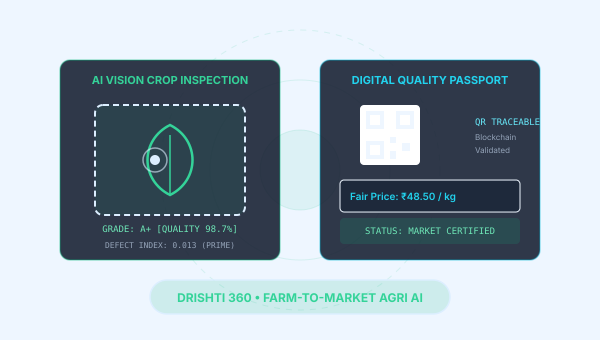
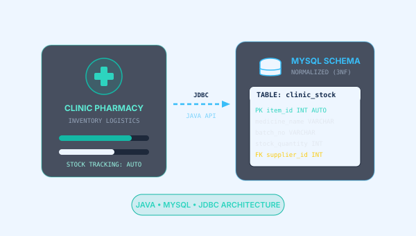

"Building Secure, Intelligent & Innovative Digital Solutions."
Computer Science & Engineering student specializing in Cyber Security at Sri Krishna College of Engineering and Technology, Coimbatore. I engineer intelligent, secure, and production-ready applications combining AI/ML, computer vision, cybersecurity threat defense, and full-stack architecture.
Engineering resilient digital architectures where security meets intelligence.
I am pursuing my B.E. in Computer Science and Engineering (Cyber Security) at Sri Krishna College of Engineering and Technology, maintaining an academic CGPA of 8.5 / 10. My technical focus bridges artificial intelligence with defensive cybersecurity engineering, transforming theoretical research into high-throughput production tools.
8.5/10
Cumulative CGPA
10+
Featured Projects
4
Internship Experiences
Top 50
National AI Hackathon
Engineering Philosophy: Defense in Depth
"Security is not an afterthought or an external layer — it is an architectural prerequisite. I design systems with zero-trust principles, least privilege access, auditable transaction trails, and proactive threat modeling from the very first commit."
Enterprise repository security scanner identifying hardcoded credentials, API keys, and private tokens across commit histories. Employs Shannon entropy analysis and AI risk verification models to calculate exposure timelines and deliver automated remediation workflows.
AI-driven platform detecting phishing URLs and anomalous network telemetry in real time. Deploys an ensemble Scikit-learn classifier behind FastAPI microservices, containerized with Docker and persisting audit events to PostgreSQL.
Next.jsFastAPIScikit-learnPostgreSQLDocker

AI & COMPUTER VISIONQR TRACEABLE
DRISHTI 360 — Farm-to-Market Agri Intelligence
AI Visual Crop Inspection & Digital Quality Passport
End-to-end computer vision and market compliance platform that analyzes harvest imagery, determines produce quality grades, calculates fair market pricing, and binds batches to tamper-evident QR Digital Quality Passports for supply chain traceability.
Full-stack enterprise project tracking architecture built on Java Spring Boot and React. Enforces stateless JWT authentication, role-based authorization guards, and auditable task lifecycle workflows.
Comprehensive defensive security assessment across educational web applications, REST APIs, and generative AI interfaces using Nmap, Burp Suite, and OWASP ZAP to identify vulnerabilities and document remediation patches.
OWASP Top 10Burp SuiteOWASP ZAPNmapPrompt Defense
ENTERPRISE JAVAREST API
School Subject & Syllabus Management System
Spring Boot Academic Curriculum & Instructor Scheduling Architecture
Enterprise Java Spring Boot platform enabling academic institutions to coordinate course syllabi, assign qualified instructors, monitor curriculum coverage milestones, and evaluate student academic progress.
Hardware-software teleoperation system translating human hand gestures into wireless motor actuation. Uses OpenCV and MediaPipe for landmark tracking and a Flask REST microservice to bridge commands over local Wi-Fi to an ESP32 microcontroller.
PythonOpenCVMediaPipeFlask RESTESP32Wi-Fi

SYSTEM ARCHITECTURE3NF MYSQL SCHEMA
Clinic Inventory Management System
Java & 3NF MySQL Pharmaceutical Supply Tracking
Clinical asset and medicine tracking desktop application engineered with Java and MySQL. Features a normalized 3NF database schema, JDBC connectivity, and stock depletion alerts to automate reordering.
JavaMySQLJDBCDatabase Design3NF Normalization
05 // PROJECTS
Entrepreneurship
"Turning Ideas Into Innovation" — Strategic ventures pioneering software, security & digital solutions.
Beyond engineering individual repositories, I build scalable technology ventures. Here are my two entrepreneurial brands translating digital ideas into reliable products:
SUDHARSHAN_TECH
CODE. CREATE. ELEVATE. Founder & Lead Architect: Sudharshan P S
Technology, Cybersecurity, and Software Development brand delivering production-grade digital applications, security advisories, and developer tools. Provides enterprise solutions with modern full-stack web architectures.
Operational Stage:Active Production Platform
Web & App Development Cybersecurity Advisory AI & Automation Tools Custom Software Solutions Technical Knowledge Hub
Strategic Roadmap: Expansion into automated compliance auditing microservices, specialized developer productivity SaaS, and interactive engineering education.
TECH SOLUTIONS VENTURE Co-Founder & Systems Architect: Sudharshan P S
Tech Solutions Venture pioneering high-throughput cloud architectures, secure distributed microservices, and AI-native enterprise system integrations. Engineered for resilient digital innovation.
Development Stage:Brand Architecture & Core Prototyping
Enterprise Cloud Architecture AI System Integrations Secure Microservices High-Throughput APIs
Analyze suspicious incoming communications. Click "Inspect Red Flags" to highlight social engineering vectors.
From:Security Alert <service@paypa1-security.com>
Subject:URGENT: Immediate Account Suspension within 2 Hours!
Dear Valued Customer, We detected unauthorized login attempts on your institutional portal.
Please click here to verify your credentials immediately.
Attached: Account_Verification.pdf.exe
Safe Client-Side URL Heuristic Inspector
Evaluates URLs for protocol security, raw IP hosts, suspicious TLDs, and high-risk keywords.
SAFE
OWASP Top 10 Defensive Matrix
A01:2021
Broken Access Control
A02:2021
Cryptographic Failures
A03:2021
Injection (SQL/Command/Prompt)
A05:2021
Security Misconfiguration
07 // CYBER LAB
Honors & Recognition
Verified hackathon awards, academic distinctions, and accredited credentials.
National AI Hackathon — Top 50 Finalist
Selected out of 500+ Competing Teams
Recognized nationally for Hackademia, an intelligent computer-vision exam invigilation system employing facial landmark mesh tracking and temporal gaze analysis.
YUGAM — Tex-Research Hackathon
2nd Runner-Up Position
Awarded 2nd Runner-Up for innovative technical engineering, cross-domain architecture, and rigorous prototyping defense under timed competitive conditions.
Cybersecurity Club — SKCET
Active Contributor & Event Organizer
Core member organizing capture-the-flag competitions, hands-on vulnerability assessments, and security awareness seminars for aspiring student researchers.
Technical Peer Mentor
Algorithm & System Mentorship
Conducted peer-learning sessions mentoring students in foundational data structures, object-oriented principles, and secure software development practices.
Verified Certifications & Simulations
Prompt Engineering for Developers
Vanderbilt University
VERIFIED
Cybersecurity Threat Vectors
Microsoft
VERIFIED
Introduction to AI
Google
VERIFIED
Tata Cybersecurity Analyst Job Simulation
Forage
VERIFIED
Lloyds Banking Group UX Design Job Simulation
Forage
VERIFIED
08 // RECOGNITION
Let's Connect
"Let's Build Something Amazing Together." Open for software engineering internships, cybersecurity opportunities, and technical collaborations.
National Hackathon Wins, Global Credentials & Live Contact Form
05
System Architecture & ColophonPage 10
3D Physics Specs, Audio Synthesis, Telemetry & Full-Stack Specs
Project Title
Tagline
Problem Statement
Problem statement description...
Architectural Solution
Architectural solution description...
Security & Engineering Standards
Security safeguards...
Technology Stack
Tech stack list...
sudharshan@cyber-codex:~ (bash)
v3.0.4
╔════════════════════════════════════════════════════════════╗
║ SUDHARSHAN P S — CYBER CODEX TERMINAL v4.0 ║
║ Type 'help' to inspect available system commands. ║
╚════════════════════════════════════════════════════════════╝
System initialized. 10 featured projects, 4 internships, and 2 startup ventures indexed.
sudharshan@codex:~$
SUDHARSHAN.AI
KNOWLEDGE ENGINE ONLINE
Hello! I'm SUDHARSHAN.AI, the portfolio assistant for Sudharshan P S. Ask me anything about his projects, cybersecurity expertise, startup ventures (SudharshanTech & Zentriq), or academic qualifications!